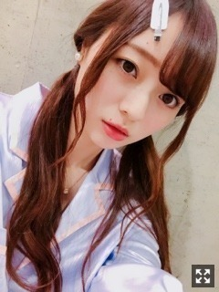
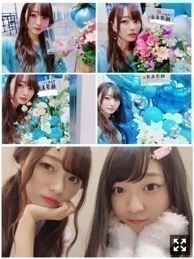
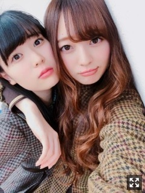
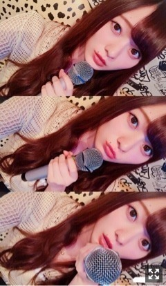

もどかしいきもち。梅澤美波
みなさまこんにちは！！
乃木坂46 ３期生の
梅澤美波です！！！

ついーんてーる
今日は
バレンタインですね〜
かといって変わらない１日だけど☺︎
友達にあげるのに大量生産して
作っていたのが懐かしいよ〜( .. )
今年は作りました！チョコ！
オーブンが使えないので
簡単なものだけど、
生チョコと生チョコタルトだよ〜
わたしはほろ苦いのが好きだから
必ずビターチョコ使います☺︎
ちょっと大人の味∠( ˙-˙ )／（笑）
今日みんなに逢わないことに気づいて
みんなも欲しい〜？
（笑）
最近つけてる香水はね、
安定してずっとお気に入りのものを使っていたけど
ちょっと気分を変えようと思い
久しぶりに前に使ってた香水をつけたら
物凄くプリンシパルを思い出しました（笑）
プリンシパルの時期につけてた香水！！
匂いって色々思い出したりしますよね〜
最近聴いてる曲はね
米津玄師さんの『Lemon』を
配信スタートした日から
ずーっと永遠リピートしています
毎日この曲からスタートする毎日☺︎
素敵だ( .. )
歌詞がとても素敵だ( .. )
少し前になりましたが
２／３ 個別握手会@東京ビッグサイト
来てくださった皆様
ありがとうございました！！
１部：パジャマ×ついん(上の写真です)
２部：レーストップスタイトスカート×三つ編み
３部：ドッドブラウスショーパン×まとめ髪
４部：あやと私服交換
５部：アイスブルーロングワンピ×巻きおろし
こんな感じでした！
バタバタしてしまって
なかなか時間がなくって
いつも写真なくてごめんね( .. )
横浜では全身撮れるようにがんばるね！
まっててね！

可愛いお花たち( .. )♡(と、たまみ
珍しく水色のワンピース着てたので
お花とマッチングしてるうう
いつもかわいいお花のプレゼント
本当にありがとう(；；)
４部来てくださった方はご存知の通り
吉田綾乃クリスティーと
私服交換を致しまして！！
あやのことだからとんでもないもの着せられるんじゃないかとビクビクしていたら
予想的中でございして（笑）
白のスウェットワンピに
高いツインテールして！と言われ、
挙句の果てに白のぽんぽん付き髪ゴムも持参して下さり
そしてメイクさんもノリノリでチークをだいぶ足され
ぶりぶり梅澤でした（笑）
驚く高さのツインテールで
終始恥ずかしさMAXでした（笑）
もう二度としませーん（笑）
でも楽しかったよ〜（笑）
写真も載せませーん（笑）
(あやが載せてましたけども（笑）
私があやに着せた私服
とっても可愛いでしょー！！
２時間くらいずっと考えて
あやに似合うのこれ！って決めて
着たとこみたらめちゃくちゃ似合ってて
可愛かった( .. )♡
私服交換面白いから
またやりますね☺︎
△近況報告しちゃおっと
昨日阪口珠美のSHOWROOMに
参加してきました〜！
たまみが１人じゃできない〜
っておねだりしてきたので
仕方なくついていってあげました◎ぱちぱち
とっても楽しかったです！
たまみの素が引き出せたのではないかな？
と思ってます！( ¨̮ )
どう？引き出せてたでしょ∠( ˙-˙ )／
また１人でもやります近々！
何して欲しいとか
こんな髪型してほしいとか
こんなコーナーやってみて！とか
色々リクエストお待ちしてますので
コメントしてってね☺︎
うめたまでんで
またまたたこぱしました〜◎ぱちぱち
具で一番好きなのは明太チーズ！！
たまみはシーチキンがお気に入りらしいし
でんはひたすらチーズを欲しがります
次はお好み焼きともんじゃしたいね〜って
話してます！
また報告します〜

れーーーーんたん
１４歳になったれんたん
かわいい妹です
５歳差！可愛くって仕方ありません！
明日はみなみんっ
ってのがすごいすきなんだーーー
質問コーナー◎
Q.今季みてるドラマは？
A.ホリデイラブがめちゃくちゃ好きです〜ドロドロ感がたまらん\( ö )/
Q.癖ってある？
A.昔からよく言われてたのはすぐ口に手がいく！乃木坂入ってからファンの方によく言われるのは、口もごもごさせること！あと最近気づいたんだけど、携帯いじってるときに口うーってしてる！絶対してる！口尖らせてる！変な癖！
告知◎
▽２／２４ B.L.T. さま
３期生連載２週目！かえでとです◎
〜ラジオ
▽３／４ らじらー！公開生放送@仙台
初めてのらじらー！です！とっても嬉しいラジオ大好き(；；)仙台出身の久保ちゃんとお邪魔させていただきます！私も呼んでいただけてとても嬉しいです( .. )MCの井上さん、そして初めましてのオリラジさんと、楽しいラジオに出来るよう頑張ります！勉強してきます！公開生放送なのでいらっしゃる方は一緒に楽しみましょう〜☺︎
▽DAM CHANNELさま
カラオケ大好きだから、
DAMCHANNELさんに出れる！
すっごい嬉しい！
って思って見たくて見たくて
昨日仕事終わり１人でカラオケしてきたんだけど
全然流れてくれなくて
諦めて帰ろうと立った瞬間流れました〜
ギリギリ見れた！奇跡！

一緒にデュエットでもします？
（笑）
私のために歌ってくださいな〜
先日、新内さんが出演されている舞台
『続・時をかける少女』
を観に行ってきました〜！！
今までたくさん舞台を
観させていただいてきたけど、
舞台のステージの作りがすごくって
１８０°に席があるから
正面からだけでなく
左右からも観れたりするので
何回か観に行ったら違った発見があるのかなって思ったりしました☺︎☺︎
色んな新内さんが観られて
とっても楽しくって可愛くって
次々と変身していくのを見るのが
とっても楽しかったです！！
わたしはあの新内さんが好きだなあ(まだ秘密◎
音楽もとっても好きだったなあ、、
あやねさんと隣で見たんだあ☺︎
この間お仕事一緒にしてね
初めてってぐらいちゃんとお話して
とっても優しくて
勝手にちょっと距離が近くなった気がして
すごく嬉しいんです( .. )
あやねさんの舞台も楽しみだなあ☺︎
欅さんのMV
めちゃくちゃカッコいいい(；；)
土生さんのフロントが
めちゃくちゃ嬉しくて
選抜発表のテレビの前で
１人できゃーってなりました（笑）
ブレずにずっと推しメン(；；)
こばやしゆいさんも好きなんです☺︎
お風呂に入るとき
朝ベッドから出るとき
どんなときも
何分に動こう
って時間を決める人なんです
けど大体５回くらい時間引き伸ばして
結局決めた時間より１時間くらい遅くにのんぴり動きだします〜
１人のときはとことんダメ人間。
とことんダラダラします∠( ˙-˙ )／
１９歳はそこも改善目標！
今日も１日お疲れ様でした☺︎
充実してましたか？？
次皆様に会える横浜握手会を楽しみに
毎日頑張るね！！
謎のプレッシャーがすごくて（笑）
精一杯の手書きメッセージでもどうぞ( ¨̮ )（笑）
今日も１日お疲れ様でした
ゆっくりおやすみくださいな〜
ばいば〜い！！
たくさん勉強してたくさん学んで自分の力にできるように頑張ります！
いろんな方が頑張っているところを見ると刺激を受けます、私も頑張らなきゃ！と
成長できるように日々色んなことを吸収してがんばるぞ〜！！
みんながんばろな〜
Original：https://www.nogizaka46.com/s/n46/diary/detail/43244?ima=0514&cd=MEMBER